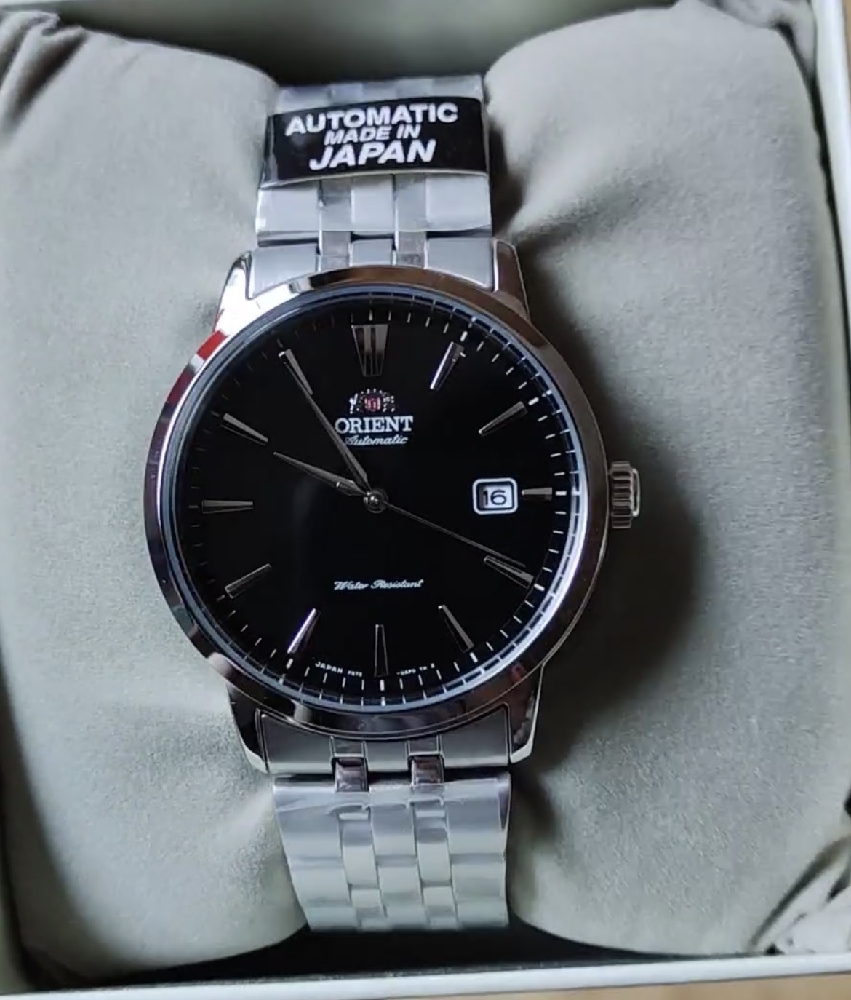

ORIENT 自動巻き腕時計 機械式 オートマチック 国内メーカー保証付 RN-AC0F01Bを実際に使って分かった魅力と注意点
G-SHOCKほどゴツくないけれど、幅40mm以下のSEIKOよりはしっかり存在感が欲しい——そんな「ちょうどいいサイズ感」を求めてたどり着いたのが、ORIENT 自動巻き腕時計 機械式 オートマチック 国内メーカー保証付 RN-AC0F01Bでした。

G-SHOCKとSEIKOの“間”を埋めるサイズ感とデザイン
このモデルを選んだ一番の理由は、「G-SHOCKほどゴツくないのに、幅40mm以下のSEIKOよりも大きく見える」という絶妙なバランスです。ビジネスシーンでG-SHOCKのボリューム感が気になる人でも、ORIENT RN-AC0F01Bならジャケットの袖口にほどよく収まりつつ、手元にしっかりとした存在感を出してくれます。
デザインは全体的にシンプルで、文字盤のロゴや「Automatic」「Water Resistant」の表記も控えめ。主張しすぎないため、オン・オフどちらのコーデにも合わせやすく、いわゆる“機械式らしいゴチャつき”が苦手な人にも取り入れやすい印象です。針の形状がセイコーやバンビーノとは異なる独特のデザインになっている点も、他人とかぶりにくいポイントで、さりげない差別化を楽しめます。
国内メーカー保証付きの機械式オートマチックを手頃に楽しめる
ORIENTは日本企業の時計ブランドであり、このRN-AC0F01Bも国内メーカー保証付き。機械式腕時計というと高価なイメージがありますが、セイコー・シチズン・カシオと比べても、オリエントの機械式は価格が一段抑えられている印象で、「初めての機械式」に手を伸ばしやすいレンジに収まっています。
もちろん、価格が抑えられている分、細部の仕上げに“値段相応”な部分もありますが、錘が摺動する様子や、竜頭を巻いたときの独特の感触は、クォーツ式では味わえない体験です。初めて機械式を手にする人は、この「巻き心地」にきっと驚くはずで、時計そのものを“動く機械”として楽しめる一本だと感じました。
なお、本記事で紹介している商品リンクは、Amazonアソシエイトを含む場合があります。リンク先の最新価格・在庫状況・保証内容などは、必ずAmazonの商品ページでご確認ください。
バンドの質感と調整で感じたメリット・注意点
口コミでも触れられているように、バンドのデザインはかなり凝っていて、外側から見たときの質感は価格以上の満足感があります。ステンレスの光り方やコマの形状が落ち着いているため、スーツスタイルにもカジュアルにも合わせやすく、「時計だけが浮いてしまう」ような違和感が出にくいのが好印象でした。
一方で、バンド調整の際に使う板バネの硬さには個体差があり、「めちゃくちゃ硬い部分」と「あっさり外せる部分」が混在しているように感じました。自分でコマ調整をする場合は、ピン抜き工具をしっかり用意し、無理に力をかけないよう注意が必要です。時計店で調整してもらうと安心ですが、DIY派の人は「硬い箇所もある」という前提で作業した方が良いでしょう。
また、バンドの外面は非常に良く仕上がっている一方で、裏面の仕上げには若干の個体差があるように感じます。シースルーバック越しにムーブメントを眺めるとき、どうしても表と裏のバンドの仕上がりを比べてしまうため、細部まで完璧さを求める人には気になるポイントかもしれません。ただし、日常使用で大きな問題になるほどではなく、「価格帯を考えると許容範囲」と感じる人も多いはずです。
実際に使って感じた満足度と、どんな人におすすめか
総じて、ORIENT 自動巻き腕時計 RN-AC0F01Bは「値段相応な一面もありつつ、機械式ならではの楽しさをしっかり味わえる一本」という印象です。錘が摺動する様子を眺めたり、竜頭を巻いたときの独特の感触を楽しんだりと、時計を“道具”以上の存在として愛着を持てるのが魅力です。私は実際に購入して、「買って良かった」と素直に感じています。
おすすめできるのは、次のような人です。
- G-SHOCKほどゴツくないが、セイコーの小ぶりなモデルより存在感が欲しい人
- 初めて機械式腕時計を試したいが、いきなり高級機には手を